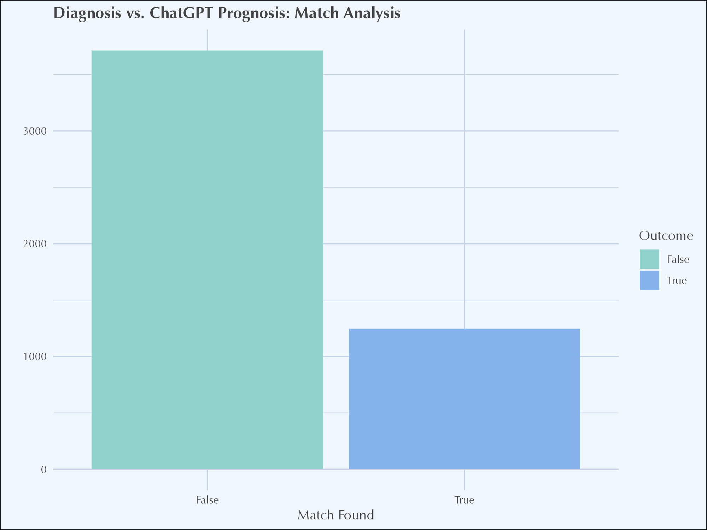
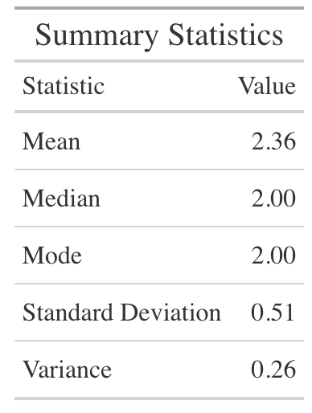
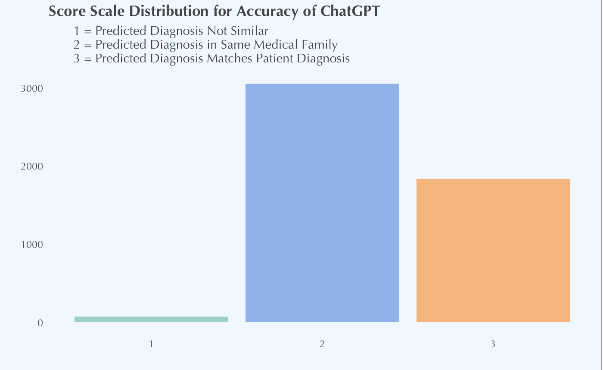
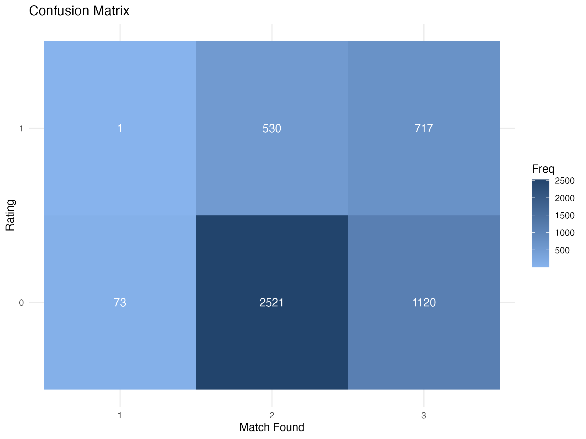
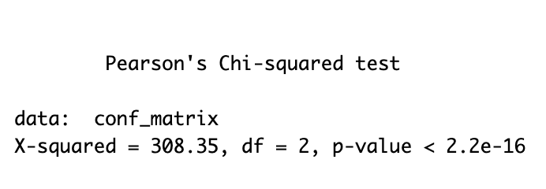
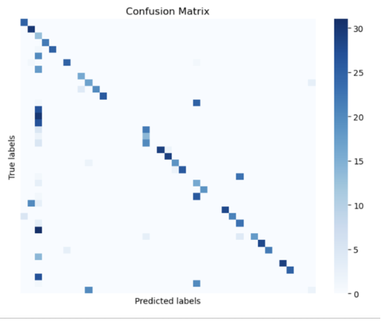
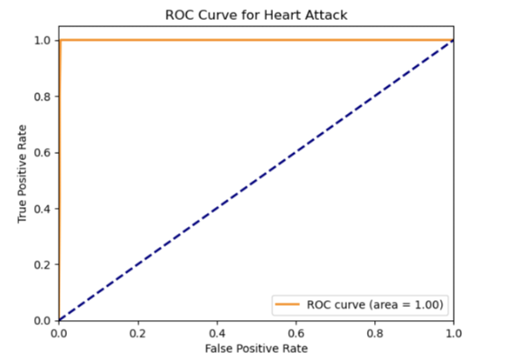
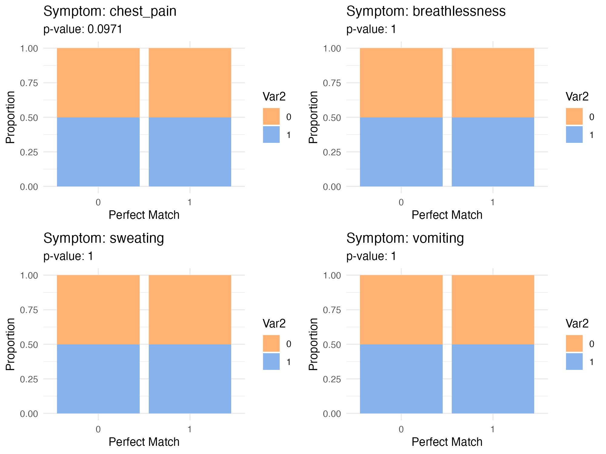
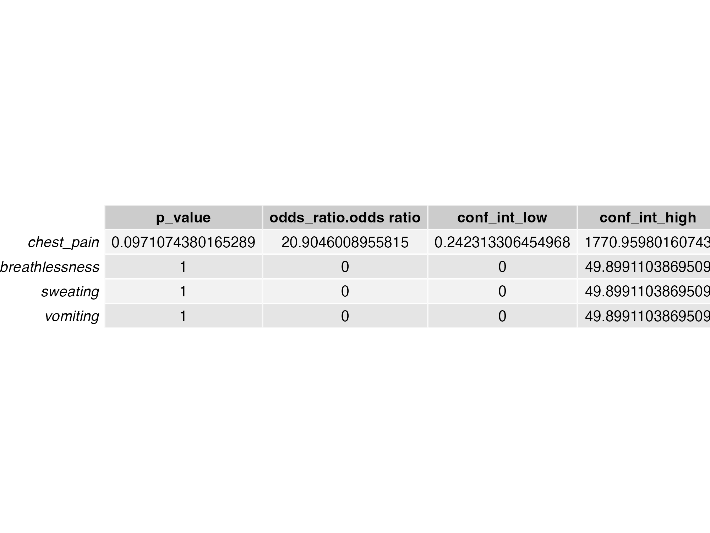

Results
Descriptive Statistics
Initially, a quick text match analysis was conducted to compare the predicted prognosis with the original prognosis. The results showed that the majority of diagnoses did not match, with ChatGPT demonstrating an overall accuracy of 25.15%. This means the AI correctly identified the diagnosis in about one out of every four cases. While this indicates some diagnostic capability, it also highlights significant gaps in the model’s reliability for clinical use.

However, after running another API call to compare the original prognosis with the predicted one and rating their similarity on a scale from 1 to 3, the results showed a shift. The matches were categorized into three groups: no match, same medical family, and perfect match. The analysis revealed that most predictions fell into the “same medical family” category. Descriptive statistics showed a mean match score of 2.2 out of 3, indicating that while ChatGPT often identified diagnoses within the correct medical family, it frequently lacked precision in delivering accurate diagnoses, underscoring its limitations in clinical settings.


Confusion Matrix Analysis
The confusion matrix provided a detailed breakdown of ChatGPT’s performance across different diagnostic categories:
- Rating 1 (No Match): ChatGPT rarely identified cases with no match correctly, resulting in a low true positive rate. This indicates that the AI often failed to recognize when a set of symptoms did not correspond to the predicted diagnosis, a critical concern for clinical accuracy.
- Rating 2 (Same Medical Family): The AI showed moderate performance in identifying related conditions, but the high number of false positives suggests frequent misclassification of unrelated conditions as related. This reflects a need for better contextual understanding of symptoms.
- Rating 3 (Perfect Match): While ChatGPT performed better in this category, correctly identifying perfect matches with higher frequency, it also exhibited a tendency to over-predict perfect matches, leading to a significant number of false positives. This over-prediction could be misleading in a clinical setting where precision is essential.

Precision, Recall, and F1-Score Evaluation
To further evaluate ChatGPT’s performance, we calculated precision, recall, and F1-scores for each diagnostic category:
- Rating 1 (No Match): The AI’s precision (0.0008), recall (0.0135), and F1-score (0.0015) were extremely low, indicating a poor ability to correctly identify no matches.
- Rating 2 (Same Medical Family): The AI demonstrated moderate precision (0.4247) and recall (0.1737), but the overall F1-score (0.2466) revealed significant room for improvement.
- Rating 3 (Perfect Match): The AI showed better performance with a precision of 0.5745, recall of 0.3903, and F1-score of 0.4648. However, these metrics still indicate the need for enhancements to achieve clinical reliability.

Chi-Square Test for Independence
The Chi-Square test results (X-squared = 308.35, p-value < 2.2e-16) showed a statistically significant association between ChatGPT’s predictions and actual outcomes. This suggests that while the model’s predictions are not random, there is considerable room for improving its accuracy and consistency across different match types.

Comparative Performance of Machine Learning Models
To understand the challenges of creating accurate predictions based on a list of symptoms, we developed our own in-house machine learning models. This not only allowed us to identify potential pain points in diagnostic accuracy but also provided a basis for comparison between traditional machine learning methods and emerging generative AI, such as ChatGPT.
In this project, we employed both Decision Tree models and Logistic Regression to predict diagnoses based on a set of symptoms. Both models achieved an accuracy of 57%, which was significantly better than the 43% accuracy demonstrated by generative AI methods like ChatGPT.
Model Selection:
Decision Trees: This model was chosen for its ability to handle complex datasets with hierarchical relationships. Decision Trees work by splitting data into branches based on feature values, capturing intricate interactions between symptoms and diagnoses. The model’s interpretability allows us to visualize decision-making processes, making it easier to understand the relationships between symptoms and diagnoses.
Logistic Regression: Well-suited for binary classification tasks, Logistic Regression provides probabilistic outputs that indicate the likelihood of a diagnosis based on symptoms. It performs well when the relationship between predictors (symptoms) and the target variable (diagnosis) can be approximated by a linear decision boundary. Its simplicity and efficiency make it an ideal choice for tasks requiring interpretability and computational efficiency.
Model Tuning and Accuracy:
Initially, we fit the models using all available symptoms to predict diagnoses. However, this led to overfitting, where the models performed well on training data but struggled to generalize to new data. To address this, we refined the models by focusing on the 10 most common symptoms. This adjustment aimed to balance model complexity and improve generalizability.
After refinement, both Decision Trees and Logistic Regression maintained a stable accuracy of 57%. This performance was notably superior to that of generative AI methods like ChatGPT, which had an accuracy of roughly 43%. The difference in performance highlights the specialized nature of our machine learning models, which are more tailored to specific classification tasks, unlike generative AI models that are designed for a broad range of language tasks.

Heart Attack Prediction: A Case Study
In our analysis, we observed that ChatGPT achieved a 100% accuracy rate for diagnosing heart attacks. To further explore this, we developed a logistic regression model specifically for heart attack diagnosis, using the top ten most common symptoms associated with heart attacks as predictors (X) and the corresponding diagnosis as the target (y). Remarkably, our logistic regression model also achieved a 100% accuracy rate, matching the performance of ChatGPT.
This finding underscores the effectiveness of both machine learning models and generative AI in diagnosing conditions characterized by a well-defined set of specific symptoms. It highlights the potential for targeted symptom analysis to significantly enhance diagnostic accuracy in specific medical scenarios, particularly for acute conditions like heart attacks.

To delve deeper into the influence of specific symptoms on ChatGPT’s diagnostic accuracy, particularly for heart attack cases, we conducted a Fisher’s Exact Test. The analysis provided the following insights:
- Chest Pain: The test suggested a potential association with perfect match predictions, though the result was not statistically significant (p-value = 0.09711).
- Breathlessness, Sweating, Vomiting: These symptoms did not show any significant association with the AI model’s prediction accuracy (p-values = 1), indicating that the model might not be effectively using these symptoms to improve diagnostic accuracy.


Addressing Discrepancies
The difference in accuracy between ChatGPT (25%) and traditional machine learning models (57%) can be attributed to the specialized nature of the problem. Traditional models, which focus on specific symptom features and undergo targeted refinement, tend to perform better in specialized tasks like medical diagnosis. This points to the need for continued development and specialization in AI models to enhance their utility in clinical settings.